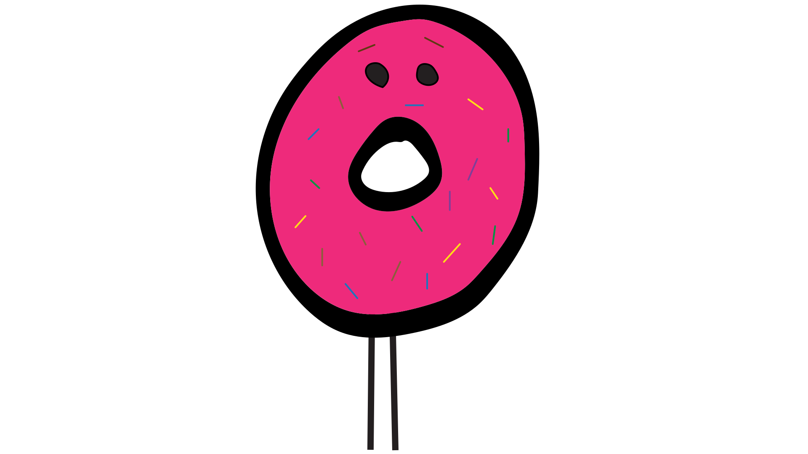

Hey sweetie,
what did you plan
for date night dinner?
I went past a fresh donut
place and it smelled so
good. I grabbed us a mega-jumbo box, so
there's enough to eat.
We’re eating that?!
That's not food!
That's FOD!
What’s Fod?
What is Fod?
Why a new term?
The Oxford English Dictionary defines food as: Any nutritious substance that people or animals eat or drink or that plants absorb in order to maintain life and growth (emphasis added) [1]
So literally by definition to be actual food it must nutritious.
Mentally scan your local supermarket shelves, applying the standard dictionary definition of food how many food products are actually food?
It's time to reclaim the word food and while we're at it were claiming back the word eat to just apply to actual food.
So I can say I eat food , everything else I stick in my mouth, I just say I consume it, not eat it!
That's it smarty pants!! So what should we eat for dinner then? .. And NO DONUTS!
Is donut food? 
My mother once said to me "There's no real food in a donut", she meant that there's nothing in there your body really needs and worse your body is going to suffer and struggle by you sticking it in your mouth. Part of the problem is one of linguistics or what we say. ‘Real food’ is one way to describe the opposite of junk food, the items you should be taking into your body.
Relax it's non-toxic
Products that fail to kill a rat in three days are classified as "fit for human consumption".
So a consumable is anything you could put in your mouth without, say, poisoning you.
Why do you look so worried.. Here, this fizz pop with triple caffine will cheer you up.
Hey what would you call
decent stuff, like
organic vegies?
I’ve been calling the
decent stuff edibles.
What’s needed
Fod has been spreading throughout the world for some time now.
The issue is that fod has started to crowd out regular food.
The good news is that people are waking up and starting to realize what is food and what is not. No-one is saying you can’t enjoy a bit of fod from time to time, but lets call it what it is.
Help stop the spread of fod
The simplist thing you can do is to just start using the word fod when you talk and write. The more people that use the term the more it will spread.
To help kick things along, we encourage you to start tagging fod you find as #fod.
Also share this website to help spread the word, if this spreads and we get some media attention, we can even get a page on wikipedia once the movement is notable.
Favorite Tweets by @richiekhooSomething else to chew on.
Dark secrets of the fod makers
A few people have asked but where exactly do you draw the line, for those considering the dark path here is some further thoughts.
Consumables dominate our supermarket shelves, these products aren't cooked they are manufactured.x
Analysing the extend to which a product was manufactured and also tuned towards maximising desirability can give you some guidance as to what is more likely to be fod.
We've coined a couple of additional terms below to help simplify the discussion further, specifically the terms are separation and addictificattion, read below for what they mean
Interested to get more involved? We'd love to hear your thoughts.
After a certain point it's no longer food
Separation is a food problem where we move further and further from what we eat. Excessive separation leads to a reduction in real food in what we consume.
Separation can occur from:
- Too many processing stages
- Too many additives/adjustments
- Inclusion of cheap bulk filler items
- Adding flavours of things the product doesn't actually contain
Was it created in a lab?
Additicification occurs when fod manufacturers lean on the tried-and-true principals of consumption desirability enhancement.
Additicification is often achived by:
- Adding More Sugar
- Adding More Fat
- Delivering More Crunch
- Increasing Insatiability, so you don't want to stop
- Replication of food colors that tell your brain the product should be nutritious.
Share your dark secrets of fod. Hashtag #fod and share any other secrets of the fod makers that you uncover.